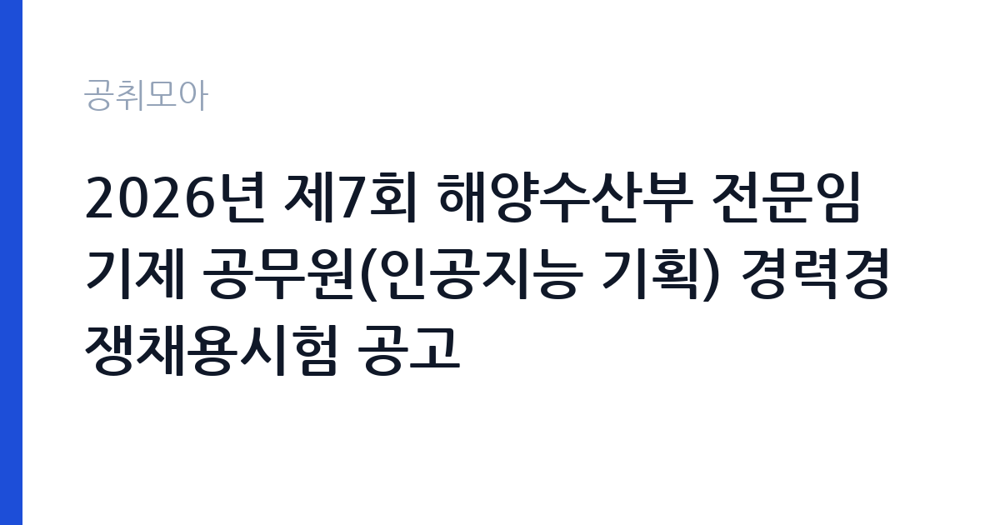

[국가기관] 2026년 제7회 해양수산부 전문임기제 공무원(인공지능 기획) 경력경쟁채용시험 공고
해양수산부 · 부산 · 마감 2026-10-02 (D-10) · 출처 나라일터

한눈에 보는 모집 조건
| 기관 | 해양수산부 |
|---|---|
| 공고명 | 2026년 제7회 해양수산부 전문임기제 공무원(인공지능 기획) 경력경쟁채용시험 공고 |
| 고용형태 | 임기제 |
| 근무지 | 부산 |
| 게시일 | 2026-09-22 |
| 마감일 | 2026-10-02 (D-10) |
지원자격, 이렇게 읽으세요
- 전문임기제 나급 1명
- 접수 ~2026-10-02 마감
- 세부 조건은 원문 공고문 확인
자격요건은 경력 또는 학위로 안내되어 있으며, 세부 기준은 첨부파일의 공고문에서 확인하셔야 합니다. 전문임기제 나급은 해당 분야의 전문성을 중심으로 평가하므로, 인공지능 기획과 정책 수립, 관련 프로젝트 수행 경험을 증명할 수 있어야 합니다. 접수 기간이 3일에 불과해 증빙서류를 미리 준비하지 않으면 지원 자체가 어려울 수 있습니다. 경력증명서와 학위증명서, 실적 증빙을 지금부터 준비하시기 바랍니다. 문의처는 051-773-5085입니다.
이 공고의 포인트
첫 번째 포인트는 접수 기간이 단 3일이라는 점입니다. 준비된 소수만 지원하는 구조라 실질 경쟁률이 낮아질 수 있습니다. 두 번째로 인공지능 기획이라는 직무는 해양수산부의 디지털 전환과 데이터 기반 행정을 이끄는 자리로, 정책 기획 역량을 키우기에 좋습니다. 세 번째로 계약 기간이 2028년 7월까지로 명시되어 있어 근무 계획을 세우기 쉽습니다. 부산 근무가 가능한 AI 분야 전문가에게 적합한 공고입니다.
전형은 어떻게 진행되나
전형은 서류전형과 면접시험으로 진행되는 경력경쟁채용입니다. 응시방법은 등기우편 접수만 인정되며, 다른 접수 방식은 인정하지 않습니다. 접수 기간이 9월 30일부터 10월 2일까지이므로, 추석 연휴 직후 우체국 영업일을 고려해 미리 발송을 준비하시기 바랍니다. 마감일 도착 기준인지 소인 기준인지를 원문에서 반드시 확인하시기 바랍니다. 면접 일정 등 세부 사항은 첨부파일의 공고문을 참고하시기 바랍니다.
원문에서 확인한 전형 방식
ㅇ 모집분야 : 인공지능 기획 ㅇ 선발직급 : 전문임기제 나급 ㅇ 고용형태 : 임기제[계약(임용)일 ~ 2028.7.2.] ㅇ 자격요건 : 경력 또는 학위 ㅇ 접수기간 : 2026년 9월 30일(수) ~ 10월 2일(금) ㅇ 응시방법 : 등기우편 접수(이외 접수는 인정하지 않음) ㅇ 문의처 : 051-773-5085 * 기타 세부사항은 첨부파일을 참조하시기 바랍니다.
이런 분께 추천해요
- 인공지능 기획과 정책 수립 경험이 있으신 분
- 부산 근무가 가능하고 약 2년의 임기제 근무를 계획하시는 분
- 해양수산 분야의 디지털 전환에 관심 있는 AI 전문가
지원 전 체크리스트
- 등기우편 접수 마감 기준(소인·도착)을 원문에서 확인했습니다
- 접수 기간 3일(9월 30일~10월 2일)에 맞춰 서류를 미리 준비했습니다
- 경력·학위 자격요건의 세부 기준을 첨부파일에서 확인했습니다
- 계약 기간(임용일~2028년 7월 2일)을 확인하고 일정을 점검했습니다
모집 일정과 제출 타이밍
접수 기간은 2026년 9월 30일부터 10월 2일까지 단 3일입니다. 추석 연휴 직후이므로 연휴 전에 모든 서류를 완성해 두시기 바랍니다. 등기우편 발송 시 배송 소요일을 감안하면 9월 30일 이전 발송이 안전할 수 있으니, 원문의 마감 기준을 먼저 확인하시기 바랍니다. 서류심사 결과와 면접 일정은 원문 공고와 부처 안내에 따르시기 바랍니다. 촉박한 일정인 만큼 하루라도 빨리 움직이시기 바랍니다.
직무 이해하기: 국가기관
인공지능 기획 직무는 해양수산부의 AI 도입 전략과 데이터 기반 행정 기획을 맡습니다. 수산과 해운, 항만, 해양환경 등 다양한 분야의 디지털 전환 과제를 발굴하고 추진하는 역할을 수행합니다. 부산에 위치한 해양수산 관련 기관에서 근무하며, 약 2년의 임기 동안 정책 기획의 전 과정을 경험할 수 있습니다. 국가기관 카테고리 공고로, AI 정책 분야 경력을 쌓으려는 분께 적합합니다.
자기소개서 작성 팁
경력기술서에서는 AI 기획과 프로젝트 수행 경험을 구체적으로 기술하시기 바랍니다. 기획했던 과제의 규모와 본인의 역할, 성과를 수치와 함께 제시하면 설득력이 높아집니다. 해양수산 분야가 낯설더라도 데이터 기반 행정에 대한 이해와 학습 의지를 보여주시기 바랍니다. 직무수행계획서에는 임기 동안의 목표를 현실적으로 제시하시기 바랍니다.
면접 준비 포인트
면접에서는 인공지능 정책에 대한 이해와 해양수산 분야 적용 방안을 질문받을 가능성이 큽니다. 해수부의 디지털 관련 발표나 사업을 미리 살펴보고 본인의 견해를 정리해 두시기 바랍니다. 짧은 접수 기간에 지원한 동기를 묻는다면 해당 분야에 대한 관심과 준비 과정을 솔직하게 답변하시기 바랍니다. 부산 근무와 임기제 근무에 대한 수용 의사도 명확히 하시기 바랍니다.
급여·근무조건 읽는 법
보수 수준은 원문 공고문에서 확인하셔야 합니다. 전문임기제 나급 공무원의 봉급은 공무원보수규정 별표의 연봉제 기준이 적용되며, 경력과 전문성에 따라 책정됩니다. 2026년도 직종별 공무원 봉급표는 인사혁신처 홈페이지에서 조회하실 수 있습니다. 정확한 연봉 조건은 원문의 보수 안내와 문의처 051-773-5085를 통해 확인하시기 바랍니다. 수당과 복리후생의 세부 항목도 원문에서 함께 살펴보시기 바랍니다.
자주 묻는 질문
- 접수 기간이 왜 이렇게 짧습니까
9월 30일부터 10월 2일까지 단 3일간 접수합니다. 등기우편 접수만 인정되므로 마감 기준을 원문에서 확인하시고 미리 발송을 준비하시기 바랍니다. - 계약 기간은 얼마나 됩니까
임용일부터 2028년 7월 2일까지로 약 2년간입니다. 연장 가능 여부는 원문 공고문에서 확인하시기 바랍니다. - 근무지는 어디입니까
해양수산부 소속으로 부산에서 근무하게 됩니다. 세부 근무 부서는 임용 시 안내받으시게 됩니다.
함께 보면 좋은 공고
[국가기관] 과학기술정보통신부 전문임기제 다급(과학기술 인력양성) 경력경쟁채용 재공고 — 마감 2026-10-06[국가기관] 육군교육사령부 한시임기제군무원(응급구조담당) 채용 — 마감 2026-10-06[국가기관] 2026년 제5회 식품의약품안전처 공무원(임기제) 경력경쟁채용시험 공고 — 마감 2026-10-06출처: 나라일터 공개정보를 바탕으로 공취모아가 정리한 안내글입니다. 모집 조건·일정은 변경될 수 있으니 지원 전 반드시 원문 공고문을 확인하세요. 본 글은 정보 제공용이며 합격을 보장하지 않습니다.